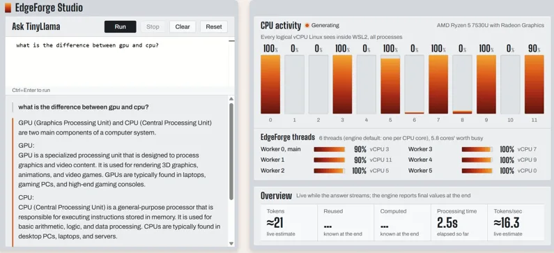

01
Winner · BIOS V2, Frontier Track
EdgeForge
From-scratch CPU LLM inference engine
Led a 3-person team that wrote a C++20 engine running TinyLlama-1.1B on a laptop CPU with no ML libraries: kernels, KV cache, BPE tokenizer and chat. Mixed 4/8-bit quantization, memory-mapped weights, AVX2/FMA kernels on a persistent thread pool.
27.54tokens/sec on CPU
5.79×speedup vs scalar
2.94×smaller model
98.8%top-1 match vs PyTorch